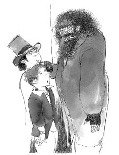

Charley ve Üçkâğıtçı, yaşlı adamın tezgâhtan aldığı bir kitabı okumakla meşgul olduğu yere doğru seğirttiler. Oliver gittikçe büyüyen bir endişeyle olan biteni izlerken, Usta Üçkâğıtçı elini adamın cebine daldırdı, bir mendil çıkarıp Charley’ye verdi. Sonra ikisi büyük bir hızla koşarak köşeyi dönüp gözden kayboldular.
Oliver’ın, gördükleri karşısında adeta başından aşağı kaynar sular dökülmüştü. Bu, göz göre göre bir hırsızlıktı ve işin içine artık o da karışmıştı! Kaçmaya başladı, ama artık çok geçti. Adı Bay Brownlow olan yaşlı adam, pahalı mendilinin çalındığını fark etmişti. “Hırsız var! Tutun! Yakalayın!” diye bağırmaya başlamıştı. Adamın haykırışına yüzlerce ses daha katıldı ve hep birlikte Oliver’ı kovalamaya başladılar.
Sonunda iri yarı, sert görünüşlü bir adam Oliver’ı yakalayıp ona sıkı bir yumruk attı. Çocuk yere düşerek çamurun içine serildi. Toza bulanmıştı, ağzı burnu kan içinde, şaşkınlıkla çevresine bakınıyordu.